여덟 주의
마지막 날 🌲
오늘 다이엔 선생님이 몸이 안 좋으셔서 나오지 못하셨습니다. 그래서 오전은 원에서 조용히 보내고, 점심을 먹은 뒤 오후에는 블루마운틴 공원으로 갔습니다. 마지막 날은 이렇게, 특별한 순서 없이 흘러갔습니다.
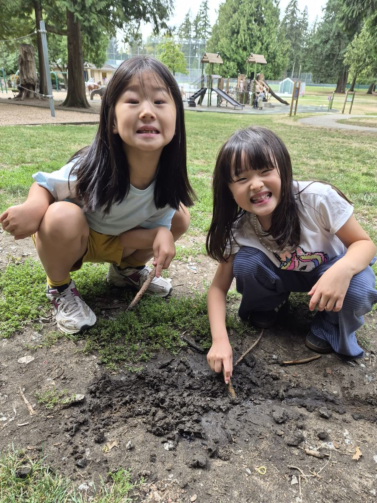
🍚 Lunch 김치볶음밥
마지막 점심은 김치볶음밥이었습니다. 김치 한 접시 곁들여서, 늘 그랬듯이.
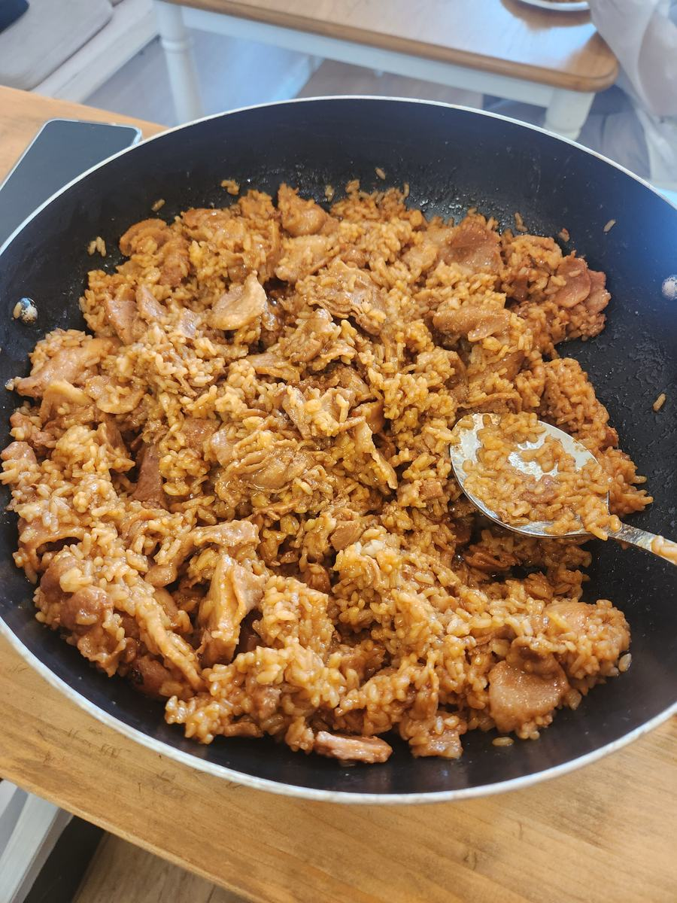
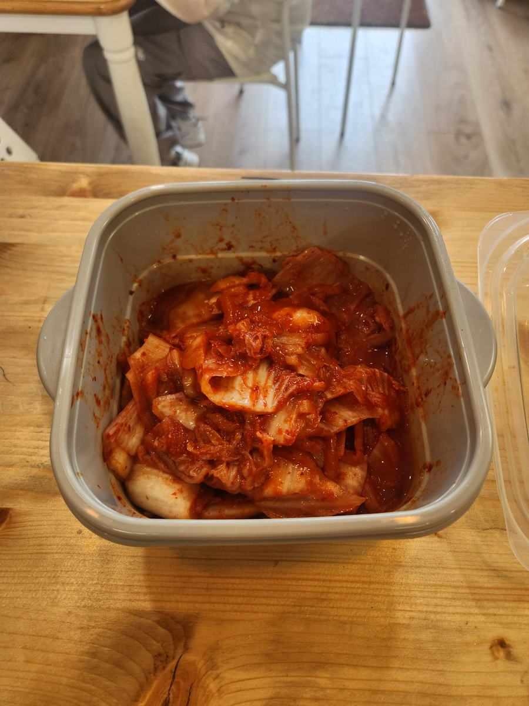
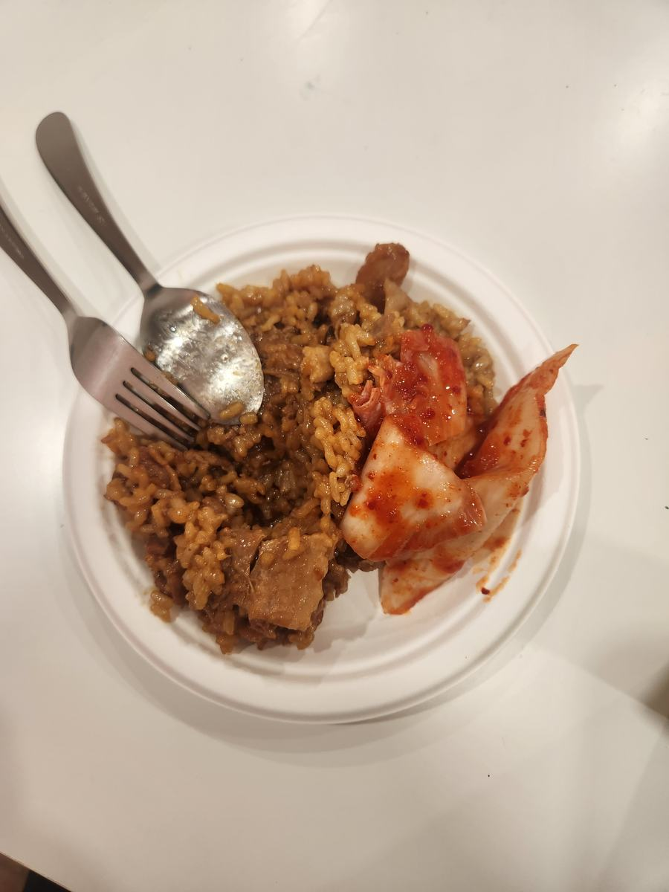
🌲 Blue Mountain Park 오후
여름 내내 다닌 그 공원, 그 로프 코스입니다. 줄 위에서 균형 잡는 법은 이제 다들 알고, 순서 정하는 것도 알아서 합니다.
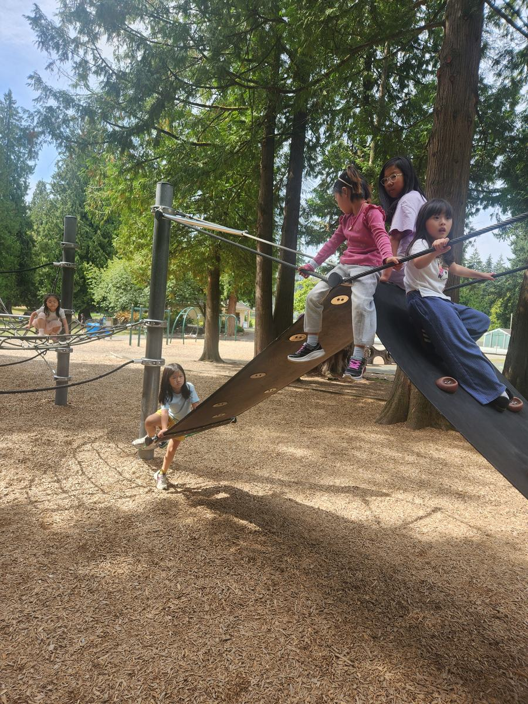
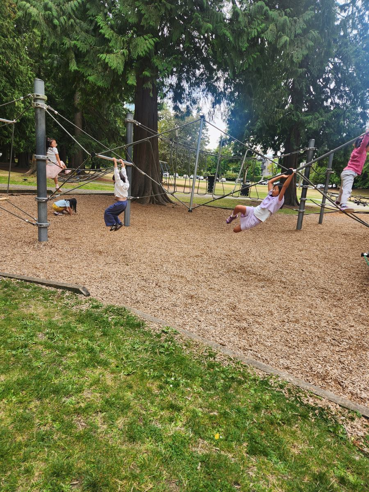
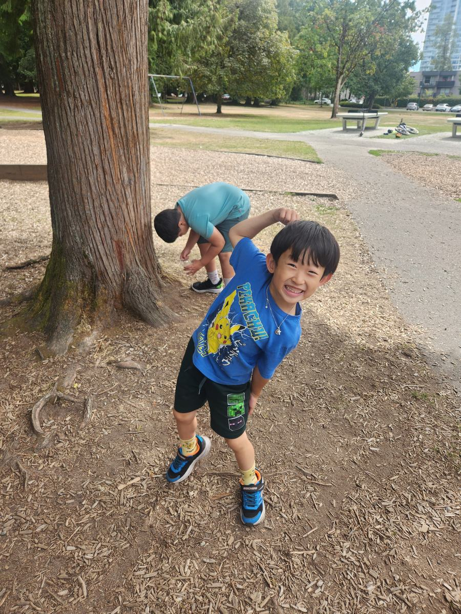
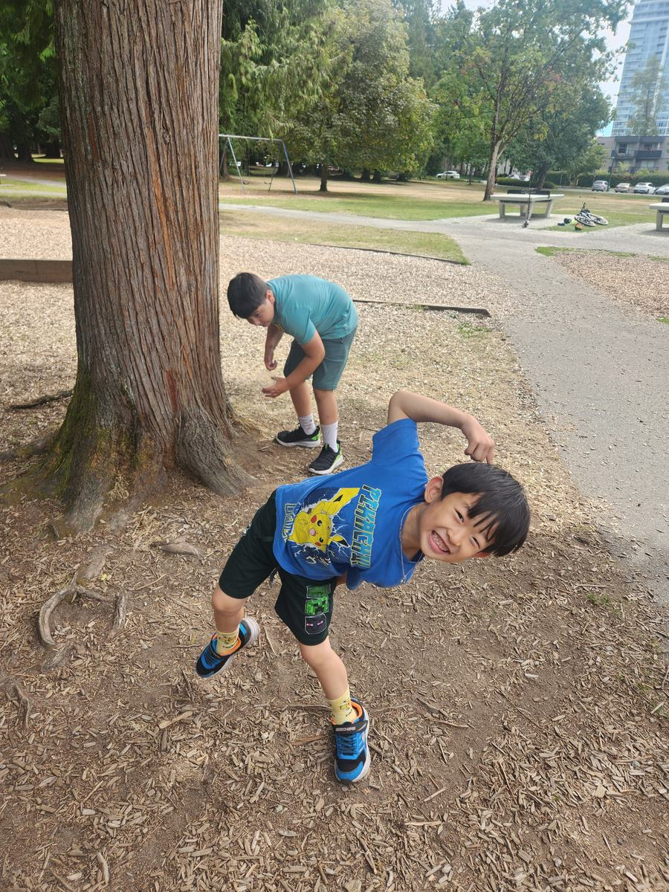
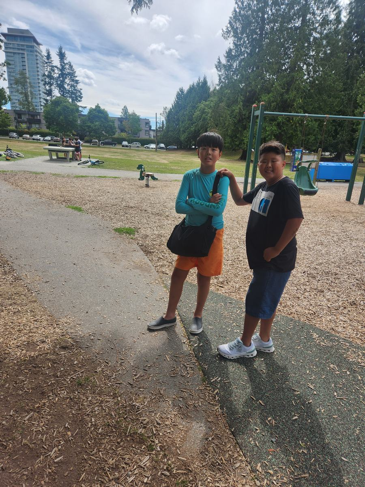
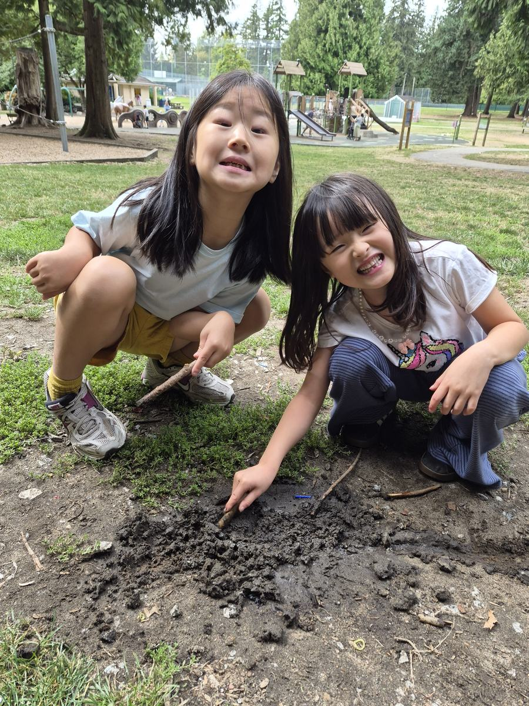
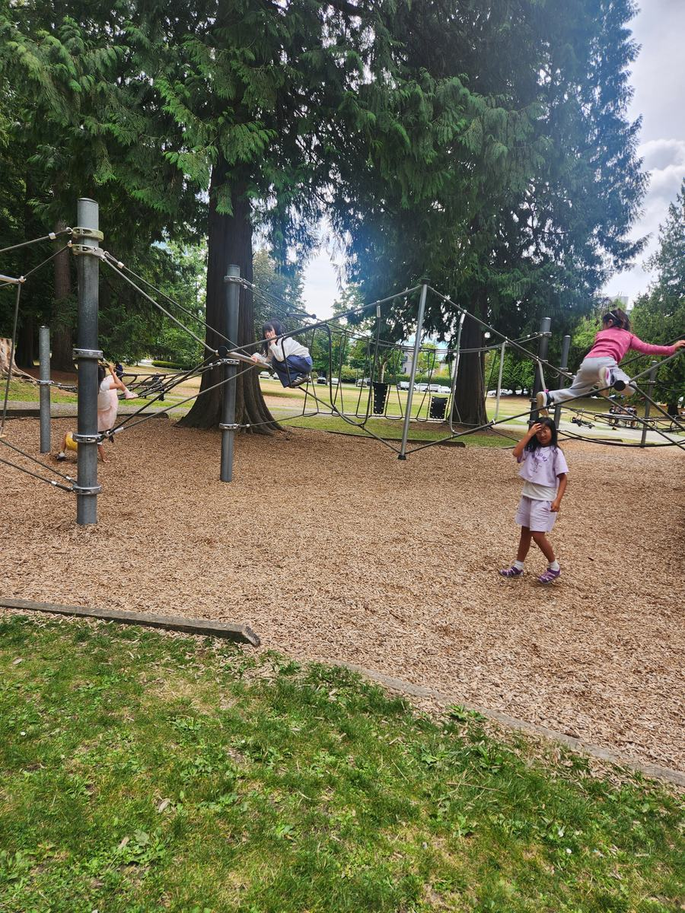
여덟 주가 이렇게 끝났습니다. 마지막 날이 가장 조용한 날이었다는 게, 어쩌면 잘 어울립니다.
📢 학부모님께 · Thank you
2026 썸머캠프가
오늘로 마무리되었습니다
여덟 주 동안 과학 실험, 수학, 글쓰기, 발표, 요리, 공원과 수영장까지 — 아이들이 정말 많은 것을 하고 갔습니다. 믿고 맡겨주신 학부모님들께 진심으로 감사드립니다.
- 수료증 — 어제 다이엔 선생님 댁에서 전달되었습니다. 못 받으신 분은 연락 주세요
- 다이엔 선생님 — 오늘 건강 문제로 함께하지 못하셨습니다. 빠른 쾌차를 빕니다 🙏
- 9월 방과후 — 등록 진행 중입니다. 픽업 · 간식 · 수학/과학/영어까지 이어집니다
아이들 다시 만날 날을 기다리겠습니다 💕
🍁
9월 새학기 방과후, 자리가 한정되어 있습니다. 같은 선생님, 같은 교실에서 학기 중에도 이어집니다 — 학교 픽업부터 간식, 숙제, 그리고 수학·과학·영어까지.
여름 잘 보냈어, 얘들아. 9월에 또 보자 💕